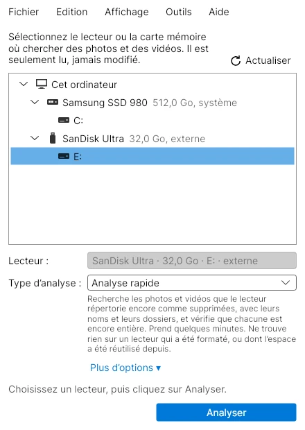
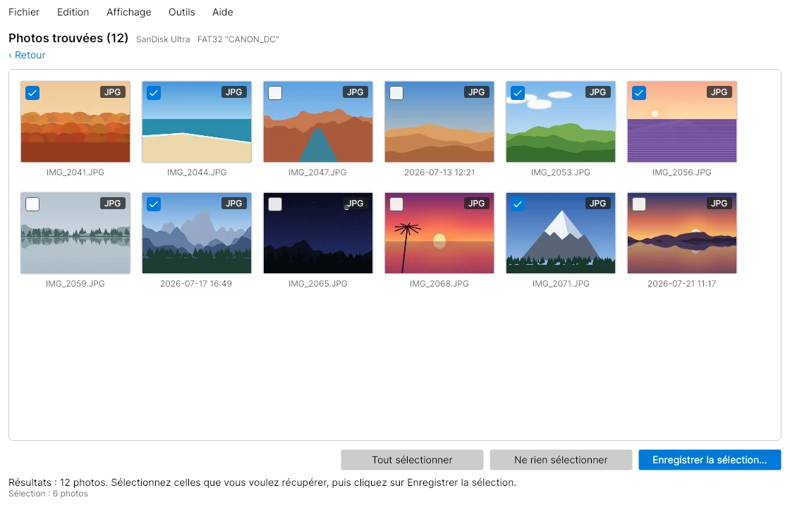

ReKarver
Récupérez vos photos sur une carte mémoire, une clé USB ou un disque dur.
Vous avez supprimé un dossier par erreur, formaté la mauvaise carte, ou votre appareil photo dit que la carte est endommagée? ReKarver cherche les photos et les vidéos sur le disque, vous montre ce qu'il a trouvé et enregistre sur votre ordinateur celles que vous choisissez. Il ne fait jamais que lire le disque.


Trois étapes, sans jamais écrire sur le disque
-
Choisissez le disque
Branchez la carte mémoire, la clé USB ou le disque et choisissez-le dans la liste. Une analyse rapide prend quelques minutes. Si ce n'est pas assez, une analyse plus poussée lit l'espace libre du disque, ou chaque octet.
-
Parcourez ce qu'il trouve
Les photos apparaissent à mesure qu'elles sont trouvées. Ouvrez-en une en grand, voyez quand elle a été prise et avec quel appareil, et masquez les doublons et les toutes petites images.
-
Enregistrez celles que vous voulez
Cochez les photos voulues et cliquez sur Enregistrer la sélection. Elles vont dans un dossier de votre choix sur un autre disque, jamais sur le disque analysé.
Prudent avec le disque, franc sur ce qu'il trouve
Lecture seule, toujours
ReKarver ouvre le disque seulement pour le lire. Écrire quoi que ce soit sur un disque qui contient des photos supprimées peut les effacer pour de bon, alors il ne le fait jamais.
Retrouve les photos après un formatage
Il reconnaît les photos et les vidéos par leur contenu, pas par la liste des fichiers du disque. Il peut donc les retrouver même si la carte a été formatée ou si la liste est endommagée.
Garde les noms et les dates quand il le peut
Sur les disques FAT, exFAT et NTFS, il lit les entrées supprimées que le disque garde encore. Bien des photos reviennent avec leur nom, leur dossier et leurs dates d'origine.
Vérifie chaque fichier
Chaque photo est vérifiée avant d'être montrée. Une photo écrasée en partie est marquée comme partielle : vous savez ce que vous obtenez.
Tient bon avec les cartes défaillantes
Les secteurs illisibles sont relus, puis sautés : un endroit abîmé n'arrête pas l'analyse. Si le disque est débranché, il le dit et garde ce qu'il a trouvé.
Respecte votre vie privée
Pas de compte, pas de publicité, pas de statistiques. ReKarver ne se connecte pas à Internet et vos photos ne quittent jamais votre ordinateur. Voir la politique de confidentialité.
Ce qu'il peut récupérer
- Photos
- JPEG, PNG, HEIC, AVIF, WebP, GIF, BMP et TIFF
- RAW d'appareil photo
- Canon CR2 et CR3, Nikon NEF, Sony ARW, Pentax PEF et Adobe DNG
- Vidéos
- MP4, MOV et 3GP, de téléphones et d'appareils photo
- Disques
- Cartes SD et microSD, CompactFlash, clés USB, disques durs et SSD internes ou externes, et fichiers image disque
- Systèmes de fichiers
- FAT12, FAT16, FAT32, exFAT et NTFS (noms et dates). Les photos sont aussi trouvées par leur contenu, quel que soit le système de fichiers, ou sans.
- Langues
- Français et anglais
- Compte requis
- Non
Sur quels systèmes
Windows d'abord, par le Microsoft Store. Des versions pour Mac et Linux sont en route.
Windows
BientôtWindows 10 (version 2004 ou plus récente) et Windows 11, par le Microsoft Store. Le Store garde l'application à jour pour vous.
macOS
En préparationUne version pour Mac est en cours. Vous voulez savoir quand elle sera prête? Écrivez-nous.
Linux
En préparationUne version pour Linux est en test. Vous voulez savoir quand elle sera prête? Écrivez-nous.
Des questions?
Consultez l'aide et soutien pour les questions courantes, ou écrivez-nous et Andy vous répondra par courriel. Vous pouvez aussi écrire à support@kwaksoftware.ca.
Un conseil en attendant : si vous avez perdu des photos, cessez d'utiliser cette carte ou ce disque jusqu'à ce que vous les ayez récupérées. Chaque nouvelle photo ou fichier enregistré dessus peut écraser celles que vous voulez retrouver.